إنشاء مجرة تفتقر إلى المادة المظلمة في كون تهيمن عليه المادة المظلمة
الملخص
نستخدم محاكيات كونية هيدروديناميكية لنبيّن أن من الممكن، عبر التفاعلات المدية، إنشاء مجرات تفتقر إلى المادة المظلمة في كون تهيمن عليه المادة المظلمة. نختار مجرات قزمة من مشروع NIHAO، حُصل عليها في نموذج المادة المظلمة الباردة القياسي، ونستخدمها شروطاً ابتدائية لمحاكيات تفاعلات المجرة التابعة مع المجرة المركزية. بعد مرور حضيضي واحد فقط في مدار ذي مركبة شعاعية قوية، يمكن لمجرات NIHAO القزمة أن تفقد ما يصل إلى 80 في المائة من محتواها من المادة المظلمة، لكن الأمر الأشد إثارة للاهتمام أن نسبة المادة المظلمة إلى المادة النجمية في مناطقها المركزية ( kpc) تتغير من قيمة ، كما هو متوقع من المحاكيات العددية وتقنيات مطابقة الوفرة، إلى قيمة تقارب الوحدة كما ذُكر بالنسبة إلى NGC1052-DF2 وNGC1054-DF4. ينخفض تشتت السرعات النجمية من قبل السقوط إلى قيم لا تتجاوز . وهذه القيم، إلى جانب نصف قطر نصف الضوء البالغ نحو 3 kpc، تتفق جيداً مع أرصاد van Dokkum ومعاونيه. تبين دراستنا أن من الممكن إنشاء مجرة من دون مادة مظلمة انطلاقاً من مجرات قزمة نموذجية تكوّنت في كون تهيمن عليه المادة المظلمة، شريطة أن تعيش في بيئة كثيفة.
keywords:
الكوسمولوجيا: النظرية – المادة المظلمة – المجرات: التكوّن – المجرات: الحركيات والديناميكيات – الطرائق: عددية1 مقدمة
يمكن تعريف المجرة بأنها تركّز من الغاز والنجوم يستقر في قاع بئر جهد المادة المظلمة (مثلاً Mo et al., 2010). في النموذج الكوني الحالي، تتجاوز المادة المظلمة (DM) الباريونات (الغاز والنجوم) بعامل يقارب خمسة إلى واحد، ومن المتوقع، في التقريب من الرتبة الصفرية، أن تعكس المجرات نسبة الكتلة هذه. وتسهم مؤثرات أخرى أيضاً في استنزاف الباريونات في جسم منهار، إما بمنع تراكم الغاز، مثل الخلفية فوق البنفسجية (Bullock et al., 2001)، أو بطرد الغاز من المجرة عبر انفجارات المستعرات العظمى (SN) (مثلاً Tollet et al., 2019) والتغذية الراجعة من النوى المجرية النشطة AGN (مثلاً Vogelsberger et al., 2014). ونتيجة لذلك، تكون المجرات كلها في معظمها مهيمنًا عليها من قبل DM11 1 تنطبق هذه العبارة على المجرات في أطرافها، حيث تهيمن بالفعل مركبة غير باريونية على الكتلة المحصورة. أما قرب المركز، فتُظهر المجرات مدى واسعاً من كسور الكتلة يمتد من هيمنة الباريونات إلى هيمنة المادة المظلمة (Courteau & Dutton, 2015)..
وقد واجه هذا التنبؤ تحدياً مع اكتشاف مجرتين (NGC 1052-DF2 وNGC 1052-DF4: ويشار إليهما فيما بعد بـ DF2 وDF4) تبدوان كأنهما تفتقران إلى المادة المظلمة (van Dokkum et al., 2018; van Dokkum et al., 2019) في مناطقهما المركزية. لهاتين المجرتين كتلة نجمية قدرها وهما تابعتان لـ NGC 1052 (لكن انظر Montes et al., 2020, لتفسير مختلف لـ DF4)، وهي مجرة إهليلجية ضخمة ( ) (Müller et al., 2019).
وبالنظر إلى كتلتهما النجمية، يُتوقع أن تتشكل هذه الأجسام في هالة من المادة المظلمة كتلتها (Moster et al., 2013)؛ وتقابل هذه الكتلة تشتت سرعة نجمية متوقعاً بنحو 25 . وبصورة مفاجئة إلى حد بعيد، قدّر van Dokkum ومعاونوه، باستخدام سرعة خط البصر لـ عناقيد كروية حتى مسافة 10 kpc، تشتت سرعة أعظمياً دون 10 . وعند ترجمة هذا التشتت المنخفض في السرعة إلى كتلة، فإنه يشير إلى نسبة كتلة المادة المظلمة إلى الكتلة النجمية بين اثنين وثلاثة، وهي بعيدة كثيراً عن قيم 30-40 عند ذلك نصف القطر المتوقعة من نظرية تشكل المجرات لهالة ذات تشتت سرعة قدره 25 (مثلاً Behroozi et al., 2013). لاحظ أن قيم 400 لنسبة كتلة المادة المظلمة إلى الكتلة النجمية المذكورة في ملخص van Dokkum et al. (2018) متوقعة عند نصف القطر الفيريالي ( kpc)؛ ولذلك فإن مقارنة هذه القيمة بنتائج محصّلة على مقاييس أصغر ( kpc) مضللة إلى حد ما.
طُرحت أفكار عدة لتفسير هذه المجرات الناقصة في DM. فمثلاً، قد تكون التصادمات عالية السرعة بين مجرات قزمة غنية بالغاز (Silk, 2019; Shin et al., 2020) أو المادة المظلمة ذاتية التفاعل (Yang et al., 2020) قنوات ممكنة لتكوّن مثل هذه الأجسام. وبما أن كلتا المجرتين المرصودتين تابعتان مؤكدتان للمجرة الإهليلجية الضخمة نفسها، فقد يكون الأصل المدي هو التفسير الأكثر معقولية.
أُجري بحث واسع في المحاكيات العددية الكبيرة عن وجود مجرات ناقصة في المادة المظلمة، مع نتائج غير حاسمة إلى حد ما: استخدم Jing et al. (2019) محاكيات EAGLE وIllustris ليجد أن 2 في المائة من التوابع في مجال الكتلة فقيرة بالمادة المظلمة. غير أن قيود الدقة (على سبيل المثال، لم يستخدم Jing et al. 2019 محاكيات EAGLE الأعلى دقة كما في Ploeckinger et al., 2018) حدّت من استخدام كتلة نجمية أكبر بنحو رتبة مقدار من الكتلة المرصودة (أي مقابل ). أجرى Haslbauer et al. (2019) تمريناً مماثلاً باستخدام مجموعة Illustris، فوجد حدوثاً أقل بكثير للمجرات الناقصة في DM، بنحو 0.1 في المائة في الحجم المحاكى الكامل.
ولتجاوز الدقة المحدودة التي توفرها المحاكيات كبيرة الحجم (على المقياس موضع الاهتمام)، أجرى Ogiya (2018) سلسلة من محاكيات الأجسام المضبوطة للتفاعل المدي بين NGC 1052 ومجرة تابعة أصغر تهدف إلى تمثيل سلف DF2 وDF4. وتحت شروط مدارية محددة، بيّن هؤلاء المؤلفون أنه من الممكن بالفعل إزالة المادة المظلمة تفضيلياً من المجرة التابعة، ومن ثم إنشاء مجرة فقيرة بـ DM. ومع أن هذه الدراسة واعدة، فقد استخدمت افتراضات مخصصة عن ملفي المادة المظلمة والنجوم في التوابع، مع نموذج كروي لجميع التوابع عند إعداد الشروط الابتدائية لتجاربهم العددية. وعلى النقيض من ذلك، تتنبأ المحاكيات العددية الكونية بهالات ثلاثية المحاور على هذه المقاييس (مثلاً، Butsky et al., 2016).
ولغرض مماثل، نرغب في الجمع بين أحدث المحاكيات العددية الكونية لتشكل المجرات من مشروع NIHAO (التحقيقات العددية في مئة جسم فلكي Wang et al., 2015) ومحاكيات هيدروديناميكية للتفاعلات المدية بين مجرة تابعة والجسم المركزي. سنستخدم شروطاً ابتدائية لمحاكيات التفاعل خرجَ محاكيات هيدروديناميكية كونية كاملة لتشكل المجرات القزمة، ونضعها على مدارات شعاعية حول جهد مركزي يهدف إلى إعادة إنتاج خصائص NGC 1052. وباستثناء المسار المداري للمجرة التابعة، لا توجد أي معلمات حرة أخرى في محاكياتنا.
2 المحاكيات
اخترنا مجراتنا من عينة NIHAO (التحقيق العددي في مئة جسم فلكي)، وهي حالياً أكبر مجموعة من محاكيات التقريب المكبر الكونية عالية الدقة (Wang et al., 2015).
أُجريت هذه المحاكيات باستخدام الشفرة gasoline2 (الموصوفة في Wadsley et al., 2017)، وتشمل التبريد المعدني، والإثراء الكيميائي، وتكوّن النجوم، والتغذية الراجعة من SN والنجوم الضخمة (ما يسمى التغذية الراجعة النجمية المبكرة). وقد ضُبطت المعلمات الكونية وفقاً لـ Ade et al. (2014)، وتُمثل كل مجرة بنحو مليون عنصر (مادة مظلمة وغاز ونجوم) داخل نصف القطر الفيريالي.
تنجح محاكيات NIHAO في إعادة إنتاج طيف واسع من خصائص المجرات مثل علاقة الكتلة النجمية بكتلة الهالة (Wang et al., 2015)، وعلاقة كتلة غاز القرص وحجم القرص (Macciò et al., 2016)، وعلاقة Tully-Fisher (Dutton et al., 2017)، وتنوع منحنيات دوران المجرات (Santos-Santos et al., 2018)، ودالة كتل التوابع في درب التبانة وM31 (Buck et al., 2019).
إن استخدام محاكيات كونية هيدروديناميكية واقعية نقطةَ انطلاق هو إحدى مزايا عملنا مقارنة بالمحاولات السابقة لإعادة إنتاج مجرات تفتقر إلى المادة المظلمة. فالمحاكيات الكونية عالية الدقة توفر طبيعياً مدارات واقعية لكل من جسيمات المادة المظلمة والنجوم. كما أنها لا تفرض أي افتراضات غير واقعية، مثل التناظر الكروي أو الاتزان الديناميكي للهالة أو القرص النجمي. فعلى سبيل المثال، نادراً ما تكون المجرات ذات الكتل النجمية حول أقراصاً دوارة تماماً، وغالباً ما تُظهر مكوناً قرصياً كروانياً مع تشتت سرعة كبير (Wheeler et al., 2017; Frings et al., 2017).
اخترنا ثلاث مجرات من NIHAO، هي g5.05e10 وg6.91e10 وg7.12e10 (ويشار إليها فيما بعد بـ G1 وG2 وG3)22 2 في مشروع NIHAO، يعكس اسم المجرة كتلتها الكلية في التشغيل منخفض الدقة.، كشروط ابتدائية؛ وهي تغطي مجال الكتلة النجمية والحجم (نصف قطر نصف الضوء) الخاصين بـ DF2 وDF4. استخدمت هذه المحاكيات كلها الدقة نفسها، بدقة كتلة للمادة المظلمة والنجوم مقدارها و وتليين جاذبي قدره pc و pc. تُدرج الخصائص البنيوية الرئيسية لمجرات NIHAO الثلاث في الجدول 1. وقد استُخرجت من المحاكيات الكونية عند وقُطعت عند 2.5 أضعاف نصف قطرها الفيريالي (Macciò et al., 2019).
| Name | NIHAO | kpc) | |||
|---|---|---|---|---|---|
| name | [ ] | [ ] | [kpc] | [] | |
| G1 | g5.05e10 | 1.6 | 27.5 | ||
| G2 | g6.91e10 | 2.1 | 26.8 | ||
| G3 | g7.12e10 | 2.8 | 37.2 |
اتباعاً لنهج Ogiya (2018)، وضعنا هذه المجرات على مدارات شعاعية حول جهد مركزي. تبدأ كل المحاكيات عند مسافة 400 kpc من المركز، وهي تمثل نصف القطر الفيريالي لهالة المضيف. ويُعرّف كل مدار بالسرعة الابتدائية للمجرة بالنسبة إلى السرعة الفيريالية لهالة المضيف ( )؛ تقع كل المدارات في مستوى ومن ثم يكون لها . وترد قائمة كاملة بالمعلمات المدارية في الجدول 2؛ ويُطوَّر كل مدار لمدة 4.5 Gyr لمحاكاة زمن سقوط نموذجي للتوابع حول (Macciò & Fontanot, 2010). يعرض الشكل 1 ثلاثة من المدارات (O1 وO2 وO3) في مستوى ، وهي التي ستُحلل بالتفصيل في هذه الورقة.
| Name | d [kpc] | symbol | |||
|---|---|---|---|---|---|
| O1 | -0.35 | 0.05 | 0.0 | 7 | |
| O2 | -0.25 | 0.05 | 0.0 | 7 | |
| O3 | -0.25 | 0.07 | 0.0 | 11 | |
| O4 | -0.4 | 0.04 | 0.0 | 31 | |
| O5 | -0.3 | 0.07 | 0.0 | 29 | |
| O6 | -0.35 | 0.04 | 0.0 | 10 | |
| O7 | -0.2 | 0.07 | 0.0 | 32 | |
| O8 | -0.4 | 0.05 | 0.0 | 31 |
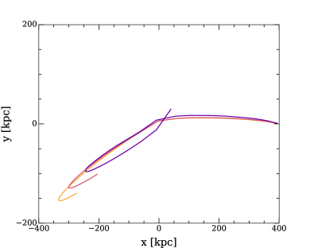
الجهد المركزي تحليلي بالكامل ويتألف من مكونين: i) هالة مادة مظلمة بكتلة كلية قدرها (Forbes et al., 2019) ومعامل تركيز قدره 8 (Dutton & Macciò, 2014)، وii) انتفاخ Hernquist لوصف المكون النجمي (أي المجرة الإهليلجية المركزية الضخمة NGC1052)، بكتلة كلية قدرها ونصف قطر قدره 0.7 kpc (Müller et al., 2019).
أُجريت كل المحاكيات باستخدام الشفرة gasoline2 (Wadsley et al., 2017) بالإعداد نفسه المستخدم سابقاً في Frings et al. (2017)، والذي يشمل الضغط الرامي، وتكوّن النجوم، والتغذية الراجعة النجمية+SN (see Frings et al., 2017, for more details). وبسبب كتلها المنخفضة، تكون المجرات التابعة فقيرة جداً بالغاز، ولذلك فإن إدراج تكوّن النجوم وعمليات التغذية الراجعة المرتبطة به محدود الأهمية بالنسبة إلى النتائج المعروضة في هذا العمل.
3 البيانات الرصدية
تستند الأرصاد المستخدمة في هذا العمل إلى ورقتي اكتشاف DF2 (van Dokkum et al., 2018) وDF4 (van Dokkum et al., 2019). بالنسبة إلى كل مجرة مرصودة، نستخدم كلا القياسين المقدمين في هاتين الورقتين: تشتت السرعة المرصود (8.4 لـ DF2 و5.8 لـ DF4)، الذي نسند إليه خطأ بواسونياً مبنياً على عدد العناقيد الكروية المستخدمة لحسابه، وتشتت السرعة الذاتي (3.2 لـ DF2 و4.2 لـ DF4) وأخطاءه النسبية، كما حسبها المؤلفون آخذين في الاعتبار الانحيازات الرصدية (انظر van Dokkum et al., 2018; van Dokkum et al., 2019, لمزيد من التفاصيل).
بالنسبة إلى مجرتيهما، DF2 وDF4، اعتمد van Dokkum et al. (2018); van Dokkum et al. (2019) نسبة الكتلة النجمية إلى الضوء بناءً على افتراض أن جمهرة النجوم المتوسطة في المجرتين تشبه جمهرة عنقود كروي (GC) بمعدنية [/H]=-1 وعمر قدره 11 Gyr. ثم تأكد ذلك بوضع جمهرة نجمية عند Mpc تطابق الخصائص العالمية لـ NGC1052–DF2 مع القيمة المعتمدة .
من ناحية أخرى، بالنسبة إلى العناقيد الكروية النموذجية، تقابل معدنية [/H]=-1 القيمة [Fe/H] (Thomas et al., 2011). وهذه المعدنية مرتفعة جداً بالنسبة إلى المجرات القزمة (Kirby et al., 2015). لذلك، قد لا تكون الاستقراءات التي تنطوي على SEDs للعناقيد الكروية ممثلة، لأن جمهرات النجوم في المجرات القزمة والعناقيد الكروية (المقاسة عبر SEDs الخاصة بها) يمكن أن تختلف اختلافاً كبيراً.
يمكن أيضاً الحصول على معلمات نموذجية للجمهرات النجمية في DF2 وDF4 بالمقارنة مع مجرات قزمة أخرى. وللوصول إلى قيمة ممثلة لـ ، نحوّل أولاً اللون المذكور في van Dokkum et al. (2018) لـ DF2، وهو ، إلى لون Johnson-Cousin33 3 https://colortool.stsci.edu/uvis-filter-transformations البالغ (لا يأخذ هذا الخطأ في الحسبان تشتت التحويل الصغير). ويحوَّل هذا اللون إلى نسبة كتلة نجمية إلى ضوء عبر تحويلات معايرة للمجرات القزمة في المجموعة المحلية (Zhang et al., 2017). وتكون القيمة النجمية الناتجة لـ DF2 هي . ومع أن هذا النهج يعطي قيمة أصغر لـ ، فإن المنهجية لا تعتمد على قالب عنقود كروي.
ومن أجل النظر في جميع المجالات الممكنة للجمهرات النجمية في المجرات القزمة، نقارن أيضاً بقاعدة بيانات كبيرة من تقديرات للمجرات منخفضة الكتلة. تنتج عينة من 400 مجرة منخفضة الكتلة () من مسح MaNGA (Bundy et al., 2015) قيمة متوسطة (Arora et al.، قيد الإعداد). كما استُخدمت نماذج اللون إلى الكتلة إلى الضوء في Zhang et al. (2017) لتحويل ألوان لمجرات MaNGA إلى . ويأخذ المتوسط والخطأ والنماذج المستخدمة في هذا الحساب في الاعتبار مجالاً كاملاً من التواريخ التطورية للمجرات القزمة.
ومن أجل الحصول على كتل نجمية لـ DF2 وDF4، اعتمدنا القيمة . كما افترضنا خطأً منهجياً قدره 0.3 dex للكتل النجمية المقدرة (Roediger & Courteau, 2015). وإضافة إلى عدم اليقين في ، يأخذ هذا الخطأ المنهجي في الحسبان الافتراضات المتنوعة التي ينطوي عليها تحويل الضوء إلى كتلة (مثل IMF، وتواريخ تشكل النجوم، ونماذج الجمهرات النجمية، إلخ؛ Courteau et al., 2014).
4 النتائج
الكمية الرصدية الرئيسية في مجرتي DF2 وDF4 هي تشتت سرعات النجوم، الذي يُستخدم بعد ذلك لتحديد الكتلة الديناميكية الكلية للجسم ومن ثم نسبة الكتلة المضيئة إلى المظلمة.
في البداية، بحثنا في قاعدة بيانات NIHAO عن مجرات تفتقر طبيعياً إلى DM. يعرض الشكل 2 تشتت السرعة النجمية داخل 8 kpc مقابل الكتلة النجمية () لمجرات NIHAO؛ لاحظ أن قيمة 8 kpc لحساب الكميتين اختيرت لاتساقها مع البيانات الرصدية. لا تمتلك أي من المجرات المحاكاة تشتت سرعة مماثلاً لتشتت DF2 أو DF4 في المجال نفسه ( )؛ فتشتت السرعة المتنبأ به من محاكيات NIHAO قريب من 20-25 ، في حين أن القيم المرصودة أدنى من 10 .
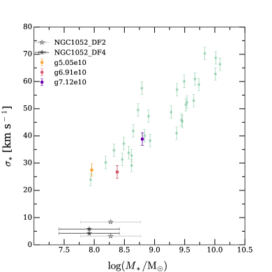
يشير الشكل 2 إلى أن مؤثرات خارجية إضافية لازمة لجعل المحاكيات والأرصاد متفقة، وبما أن مجرات NIHAO اختيرت كلها لتكون مركزية ومعزولة إلى حد معقول (انظر Wang et al., 2015, لمزيد من التفاصيل)، فمن الطبيعي دراسة أثر البيئة. وبالنظر إلى أن DF2 وDF4 تابعتان كلتاهما لـ NGC1052، نريد دراسة آثار التفاعلات المدية بالتفصيل عبر إجراء محاكيات عالية الدقة لمجرة مركزية/تابعة.
يعرض الشكل 3 تطور تشتت السرعة النجمية () داخل 8 kpc من المركز (بما يتسق مع قياسات van Dokkum ومعاونيه) لـ G2 على المدار O244 4 كل تشتتات السرعة المعروضة في الورقة هي 1D ومحسوبة على طول محور في المحاكاة.. يمثل الخط المتصل المحسوب باستخدام جميع النجوم داخل نصف القطر المختار، ويتفق جيداً مع نقاط الرصد من van Dokkum et al. (2018); van Dokkum et al. (2019). ومن ناحية أخرى، تستند البيانات المرصودة إلى قياسات سرعة خط البصر لعشرة وسبعة عناقيد كروية في DF2 وDF4، على الترتيب؛ وللاقتراب من الأرصاد، حاولنا أيضاً اختيار تسعة جسيمات نجمية قديمة وفقيرة بالمعادن من محاكياتنا، مع التأكد من أن لها التوزيع الشعاعي نفسه للعناقيد الكروية في DF2. ويعرض الخط المتقطع في الشكل 3 تشتت السرعة المحصل بهذه الطريقة، وهو في اتفاق جيد مع تشتت السرعة المتوسط (من جميع النجوم). يوجد تشتت قدره نحو 2 يكاد يكون مستقلاً عن الزمن (التشتت في الشكل مبني على 100 تحقيقاً لأخذ عينة من تسع نقاط، وتُعرض عشرة من تلك التحقيقات في الرسم). وسنستخدم هذا التشتت الناتج عن العدد المحدود من مقتفيات السرعة فيما يلي بوصفه الخطأ الافتراضي في تشتت السرعة.
على الرغم من تشابه المعلمات، ليست جميع أزواج المجرة-المدار متساوية الفاعلية في خفض كسر المادة المظلمة و/أو تشتت السرعة النجمية. يعرض الشكل 4 التغير في كدالة في الزمن لثلاثة أزواج مختلفة من المدارات والمجرات. يمتلك اثنان منها قيماً نهائية لتشتت السرعة النجمية دون 10 ، في حين أن المجرة على المدار O3، رغم امتلاكها مسافة حضيض قدرها بضعة kpc، لها قيمة شبه ثابتة طوال المدار كله، بنحو 30 .
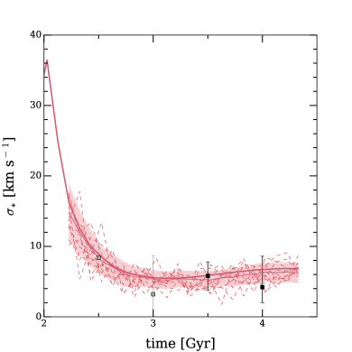
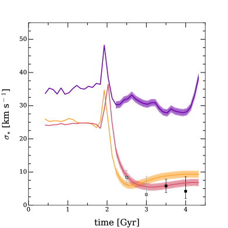
يرتبط التغير في تشتت السرعة النجمية بتغير كبير في محتوى الكتلة في المناطق الداخلية من المجرة. يعرض الشكل 5 التغير في نسبة الكتلة المظلمة إلى النجمية داخل نصف قطر 8 kpc مع الزمن.
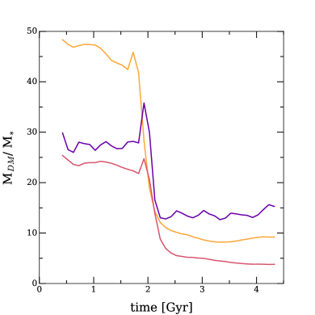
إن تراكيب المجرة-المدار ذات أقوى تغير في هي التي تُظهر أكبر انخفاض في نسبة الكتلة المظلمة إلى النجمية، إذ تهبط بعامل أكبر من خمسة في جميع الحالات. وفي حين ينخفض محتوى المادة المظلمة بأكثر من عامل عشرة، فإن أكثر مقاومة بكثير للقوى المدية، كما هو موضح في الشكل 6. ويبقى المحتوى النجمي لجميع المجرات ضمن عامل مقداره بضعة (في المتوسط ) بالنسبة إلى قيمته الابتدائية، مظهراً فرقاً قوياً في استجابة التوزيع الداخلي ( kpc) لـ DM والنجوم للمؤثرات المدية.
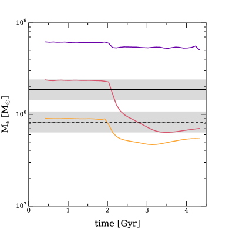
يرتبط هذا الاختلاف في استجابة المكون النجمي الداخلي مقارنة بمكون المادة المظلمة الداخلي بالمدارات شديدة الاختلاف التي تمتلكها DM والنجوم داخل المجرة. فجسيمات المادة المظلمة تقع على مدارات ممتدة جداً (مثلاً Jesseit, 2004)، والجسيمات الموجودة في المنطقة الداخلية من المجرة عند زمن معين يمكن أن تتحرك إلى مسافات أبعد بكثير في الهالة في وقت لاحق، ومن ثم تتعرض لتأثيرات التجريد المدي. وعلى النقيض، تكون النجوم محصورة في المنطقة الداخلية ومحجوبة عندئذ عن الاضطرابات المدية بواسطة المادة المظلمة (مثلاً Peñarrubia et al., 2010; Buck et al., 2019). وهذا الاختلاف في توزيع المدارات بين النجوم وDM هو العنصر الأساسي لـ إزالة المادة المظلمة تفضيلياً بدلاً من النجوم من المنطقة المركزية لمجرة ما، ومن ثم إنشاء جسم يكاد يكون خالياً من المادة المظلمة.
أثر آخر للقوى المدية هو حث الاسترخاء الديناميكي في الجسم المضطرب (Chang et al., 2013)، وهو ما يؤدي عادة إلى زيادة في نصف القطر. يعرض الشكل 7 سلوك نصف القطر النجمي كدالة في الزمن ويقارنه بالقيم الرصدية لـ DF2 وDF4.
لتقدير نصف قطر نصف الضوء، نحسب أولاً ملف السطوع السطحي في النطاق لكل مجرة من منظور مواجه. وتُسند إضاءة كل جسيم نجمي، بالنظر إلى عمره ومعدنيته ودالة كتلته الابتدائية، باستخدام نموذج Padova للجمهرات النجمية البسيطة55 5 http://stev.oapd.inaf.it/cgi-bin/cmd (Marigo et al., 2008; Girardi et al., 2010). نستبعد أي نجوم تقع بعد عتبة السطوع السطحي الشعاعية البالغة 31 mag arcsec-2، بما يتسق مع مسح DRAGONFLY (Merritt et al., 2016). ثم نجد نصف القطر 2D الذي يحتوي نصف ضوء النطاق . وأخيراً، لا نأخذ في الحسبان الانطفاء بالغبار، الذي من شأنه عموماً أن يخفض أنصاف أقطار المجرات المحاكاة. ومن الجدير بالملاحظة أن القيمة الدقيقة لعتبة السطوع السطحي لا تؤثر بقوة في نصف القطر المقدَّر.
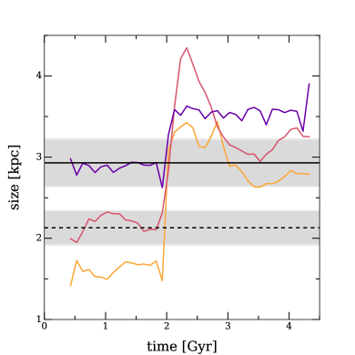
تُظهر نتائجنا تشتتاً كبيراً إلى حد ملحوظ في استجابة G1 وG2 وG3 للتفاعل مع الجهد المركزي. ومن المثير للاهتمام معرفة ما إذا كان هذا الاختلاف يعود إلى المعلمات المدارية أم إلى الخصائص الذاتية للمجرات.
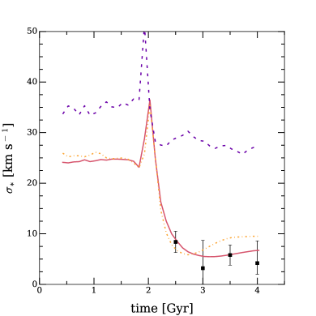
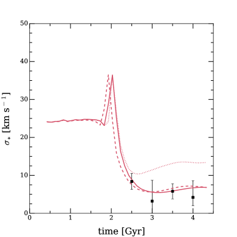
يعرض الشكل 8 تطور تشتت السرعة النجمية إما عند مدار ثابت للمجرات الثلاث أو عند مجرة ثابتة على مدارات الاختبار الثلاثة لدينا. وبصورة أدق، تعرض اللوحة العليا G1 وG2 وG3 كلها على المدار O2، في حين أن اللوحة السفلى تعرض المجرة G2 على المدارات O1 (خط متقطع)، وO2 (خط متصل)، وO3 (خط منقط). وأخيراً، يعرض الشكل 9 النتائج للمدارات الثمانية (انظر الجدول 2) على المجرات الثلاث؛ وتقابل الرموز المختلفة مدارات مختلفة، بينما مخطط الألوان هو نفسه كما في الرسوم السابقة.
وكما توضح الأشكال، أياً كان المدار، تمتلك G3 دائماً تشتت سرعة نهائياً فوق 14 ، في حين يمكن لـ G1 وG2 الوصول إلى تشتتات أدنى بكثير من 10 على عدة مدارات. إن خصائص المجرة هي بالفعل أهم من معلمات المدار في تحديد تطور تشتت السرعة النجمية.
ويعود ذلك إلى ملف كثافة المادة المظلمة الأكثر تركيزاً والأكثر “استدباباً” جزئياً في G3 مقارنة بالمجرتين الأخريين، كما هو موضح في الشكل 10. تمتلك المجرات الثلاث كلها ملف كثافة أقل انحداراً مما تتنبأ به محاكيات الأجسام الصرفة (مثلاً Dutton & Macciò, 2014). فعلى سبيل المثال، تبلغ ميول ملف الكثافة بين 1 و2 في المائة من نصف القطر الفيريالي 0.33 و0.64 و0.72 للمجرات الثلاث، على الترتيب (Macciò et al., 2020)، في حين يعطي ملف NFW (Navarro et al., 1996) دائماً ميولاً أشد انحداراً من -1. وفوق ذلك، تمتلك G3 على جميع المقاييس كتلة تعادل ثلاثة إلى أربعة أضعاف كتلة G1 أو G2. هذان الأثران يجعلان G3 أكثر مقاومة للقوى المدية (Read et al., 2006; Peñarrubia et al., 2008; Ogiya, 2018). ونتيجة لذلك، ينخفض فقدان الكتلة في G3، التي تحتفظ عندئذ بتشتت سرعة أكبر.
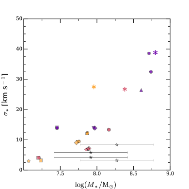
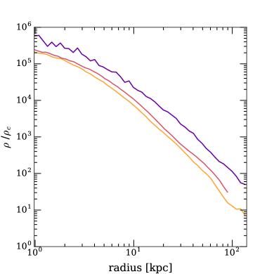
أخيراً، رغم الاضطراب المدي الكبير الذي تختبره المجرات قرب مركز الجهد، وعند رصدها على مسافة مئة kpc من المركز (على نحو مشابه لـ DF2 وDF4)، نشدد على أن المجرات المحاكاة لا تُظهر أي دليل واضح على مؤثرات مدية (مثل التيارات النجمية، والتوهجات، وما إلى ذلك). بل تُظهر مورفولوجيات ملساء إلى حد ما، بما يتفق مع المورفولوجيات المرصودة لـ DF2 وDF4.
5 المناقشة والاستنتاجات
في ورقتين حديثتين، أبلغ van Dokkum ومعاونوه عن رصد مجرتين منخفضتي الكتلة ( ) بتشتت سرعة نجمي مركزي شديد الانخفاض ( ). ويبدو أن هذا التشتت، عند ترجمته إلى تقدير للكتلة ومقارنته بالكتلة النجمية داخل نصف قطر 8 kpc، يشير إلى محتوى مركزي منخفض جداً من المادة المظلمة، يكاد يتسق مع انعدام المادة المظلمة تماماً. ويتباين هذا مع تنبؤات المحاكيات وتقنيات مطابقة الوفرة (مثلاً Moster et al., 2013) التي تتنبأ بأن المجرات في هذا المجال تعيش في هالات مادة مظلمة أشد ضخامة بكثير، ذات تشتت سرعة قريب من 30 ، وأنها مهيمن عليها بقوة من قبل DM في مناطقها المركزية (حتى 30-40 مرة مادة مظلمة أكثر من المادة المرئية). وتطرح هذه الأرصاد سؤالاً عما إذا كان بوسع هذه المجرات الناقصة في DM أن تتشكل فعلاً في كون تهيمن عليه DM (كما تدل أرصاد CMB Ade et al., 2014)، أم أنها تتحدى بطريقة ما صورتنا الحالية لتشكل المجرات والبنى.
في هذه الورقة، استخدمنا مزيجاً من المحاكيات الكونية الهيدروديناميكية من مشروع NIHAO (Wang et al., 2015) ومحاكيات التفاعل المباشر (Frings et al., 2017; Ogiya, 2018) لدراسة ما إذا كانت المؤثرات المدية قادرة على تفسير الخصائص الديناميكية لـ DF2 وDF4 ضمن حدود سيناريو تشكل المجرات الكلاسيكي (مثلاً Somerville & Davé, 2015).
وبمقارنة السرعات المرصودة بالسرعات المستخرجة من مجرات NIHAO، أظهرنا أن الأجسام ذات منخفضة كما في DF2 وDF4 لا يمكن إعادة إنتاجها بمحاكياتنا الحالية لمجرات الحقل (أي الأجسام المركزية)، على الرغم من أن NIHAO تمتلك “تمدد هالة” قوياً إلى حد ما بوصفه أثراً لتشكل المجرات (Tollet et al., 2016; Macciò et al., 2020). وبما أن كلاً من DF2 وDF4 مجرتان تابعتان لـ NGC 1052، وهي مجرة إهليلجية ضخمة، فقد طُرحت اقتراحات بأن المؤثرات المدية يمكن أن تخفض كثافة DM المركزية (Ogiya, 2018; Jing et al., 2019).
في ورقتنا، وللمرة الأولى، جمعنا بين محاكيات كونية عالية الدقة (بأكثر من عنصر لوصف DM والغاز والنجوم) وبين محاكيات تفاعل مباشر لدراسة أثر القوى المدية في توزيع DM في نظائر DF2 وDF4.
وبحقن مجرات كونية في مدارات ذات مركبة شعاعية قوية، أنشأنا مجرات قادرة على إعادة إنتاج جميع الخصائص الرئيسية لـ DF2 وDF4. حصلنا على تشتت سرعة نجمي مركزي محاكى منخفض حتى ، حيث ينشأ عدم اليقين من أخذ عينة عشوائية من نحو 10 نظائر للعناقيد الكروية لحساب تشتت السرعة. وعلى الرغم من المؤثرات المدية القوية قرب المركز، لا تُظهر المجرات المحاكاة دليلاً على اضطرابات مدية (مثل التيارات النجمية) عندما تُرصد على مسافة بضع مئات kpc من المركز، بما يتفق مع موضع ومورفولوجية DF2 وDF4.
يرتبط تغير تشتت السرعة النجمية من قيم ابتدائية (أي في العزلة) حول 30 إلى القيم النهائية البالغة بضعة بالإزالة التفضيلية القوية للمادة المظلمة (مقارنة بالنجوم)، حتى من منطقة داخلية نصف قطرها 8 kpc. ينخفض محتوى المادة المظلمة بعامل من 20 إلى 100، في حين لا تتغير الكتلة النجمية إلا بعامل مقداره بضعة. ونتيجة لذلك، تتغير نسبة كتلة DM المركزية إلى الكتلة النجمية من 25-40 إلى قيم أقرب إلى الوحدة. ونعزو هذا التغير التفاضلي إلى اختلاف مدارات جسيمات النجوم والمادة المظلمة المركزية، إذ تكون الأخيرة في مسارات أطول شعاعياً، ما يجعلها أكثر عرضة للقوى المدية (مثلاً Jesseit, 2004; Peñarrubia et al., 2010).
إجمالاً، تُظهر دراستنا كيف يمكن إنشاء مجرات، في بيئة كثيفة، ذات تشتتات سرعة مركزية شديدة الانخفاض، وكتل نجمية وأحجام متسقة مع تلك الخاصة بـ DF2 وDF4. وقد لا تمثل المجرات التي تفتقر إلى المادة المظلمة في بيئة مجموعية خروجاً عن النماذج الكونية الحالية. ويجب على مزيد من الدراسات الرصدية (Montes et al., 2020) والعددية66 6 قُدمت ورقة لـ Jackson et al. (2020) تصل إلى استنتاجات مماثلة إلى arXiv خلال ثوانٍ من نشرنا. إن حساب الاحتمال الفعلي لمثل هذا الحدث يتجاوز نطاق هذا العمل. أن تقيّم ما إذا كان تكرار المجرات الناقصة في المادة المظلمة متسقاً مع توزيعات مدارات التوابع النموذجية التي يتنبأ بها تشكل البنى الهرمي.
توافر البيانات
ستُتاح البيانات التي يستند إليها هذا المقال عند طلب معقول إلى المؤلف المراسل.
الشكر والتقدير
يشكر المؤلفون بامتنان Gauss Centre for Supercomputing e.V. (www.gauss-centre.eu) على تمويل هذا المشروع من خلال توفير زمن حوسبة على الحاسوب الفائق GCS Supercomputer SuperMUC في Leibniz Supercomputing Centre (www.lrz.de) وموارد الحوسبة عالية الأداء في New York University Abu Dhabi. يشكر AVM J. Frings لمشاركته البرمجية اللازمة لإعداد محاكيات التفاعل. يعرب TB عن امتنانه للدعم المقدم من European Research Council بموجب منحة ERC-CoG رقم CRAGSMAN-646955. ويقر SC بالتمويل المقدم من Natural Science and Engineering Research Council of Canada عبر برنامج Discovery Grant التابع له.
References
- Ade et al. (2014) Ade P. A. R., et al., 2014, Astron. Astrophys., 571, A16
- Behroozi et al. (2013) Behroozi P. S., Wechsler R. H., Conroy C., 2013, ApJ, 770, 57
- Buck et al. (2019) Buck T., Macciò A. V., Dutton A. A., Obreja A., Frings J., 2019, MNRAS, 483, 1314
- Bullock et al. (2001) Bullock J. S., Kolatt T. S., Sigad Y., Somerville R. S., Kravtsov A. V., Klypin A. A., Primack J. R., Dekel A., 2001, MNRAS, 321, 559
- Bundy et al. (2015) Bundy K., et al., 2015, ApJ, 798, 7
- Butsky et al. (2016) Butsky I., et al., 2016, MNRAS, 462, 663
- Chang et al. (2013) Chang J., Macciò A. V., Kang X., 2013, MNRAS, 431, 3533
- Courteau & Dutton (2015) Courteau S., Dutton A. A., 2015, ApJ, 801, L20
- Courteau et al. (2014) Courteau S., et al., 2014, Reviews of Modern Physics, 86, 47
- Dutton & Macciò (2014) Dutton A. A., Macciò A. V., 2014, MNRAS, 441, 3359
- Dutton et al. (2017) Dutton A. A., et al., 2017, MNRAS, 467, 4937
- Forbes et al. (2019) Forbes D. A., Alabi A., Brodie J. P., Romanowsky A. J., 2019, MNRAS, 489, 3665
- Frings et al. (2017) Frings J., Macciò A., Buck T., Penzo C., Dutton A., Blank M., Obreja A., 2017, MNRAS, 472, 3378
- Girardi et al. (2010) Girardi L., et al., 2010, ApJ, 724, 1030
- Haslbauer et al. (2019) Haslbauer M., Dabringhausen J., Kroupa P., Javanmardi B., Banik I., 2019, A&A, 626, A47
- Jackson et al. (2020) Jackson R. A., et al., 2020, arXiv e-prints, p. arXiv:2010.02219
- Jesseit (2004) Jesseit R., 2004, PhD thesis, -
- Jing et al. (2019) Jing Y., Wang C., Li R., Liao S., Wang J., Guo Q., Gao L., 2019, MNRAS, 488, 3298
- Kirby et al. (2015) Kirby E. N., Simon J. D., Cohen J. G., 2015, ApJ, 810, 56
- Macciò & Fontanot (2010) Macciò A. V., Fontanot F., 2010, MNRAS, 404, L16
- Macciò et al. (2016) Macciò A. V., Udrescu S. M., Dutton A. A., Obreja A., Wang L., Stinson G. R., Kang X., 2016, MNRAS, 463, L69
- Macciò et al. (2019) Macciò A. V., Frings J., Buck T., Dutton A. A., Blank M., Obreja A., Dixon K. L., 2019, MNRAS, 484, 5400
- Macciò et al. (2020) Macciò A. V., Crespi S., Blank M., Kang X., 2020, MNRAS,
- Marigo et al. (2008) Marigo P., Girardi L., Bressan A., Groenewegen M. A. T., Silva L., Granato G. L., 2008, A&A, 482, 883
- Merritt et al. (2016) Merritt A., van Dokkum P., Abraham R., Zhang J., 2016, ApJ, 830, 62
- Mo et al. (2010) Mo H., van den Bosch F. C., White S., 2010, Galaxy Formation and Evolution
- Montes et al. (2020) Montes M., Infante-Sainz R., Madrigal-Aguado A., Román J., Monelli M., Borlaff A. S., Trujillo I., 2020, arXiv e-prints, p. arXiv:2010.09719
- Moster et al. (2013) Moster B. P., Naab T., White S. D. M., 2013, MNRAS, 428, 3121
- Müller et al. (2019) Müller O., et al., 2019, A&A, 624, L6
- Navarro et al. (1996) Navarro J. F., Eke V. R., Frenk C. S., 1996, MNRAS, 283, L72
- Ogiya (2018) Ogiya G., 2018, MNRAS, 480, L106
- Peñarrubia et al. (2008) Peñarrubia J., Navarro J. F., McConnachie A. W., 2008, ApJ, 673, 226
- Peñarrubia et al. (2010) Peñarrubia J., Benson A. J., Walker M. G., Gilmore G., McConnachie A. W., Mayer L., 2010, MNRAS, 406, 1290
- Ploeckinger et al. (2018) Ploeckinger S., Sharma K., Schaye J., Crain R. A., Schaller M., Barber C., 2018, MNRAS, 474, 580
- Read et al. (2006) Read J. I., Wilkinson M. I., Evans N. W., Gilmore G., Kleyna J. T., 2006, MNRAS, 366, 429
- Roediger & Courteau (2015) Roediger J. C., Courteau S., 2015, MNRAS, 452, 3209
- Santos-Santos et al. (2018) Santos-Santos I. M., Di Cintio A., Brook C. B., Macciò A., Dutton A., Domínguez-Tenreiro R., 2018, MNRAS, 473, 4392
- Shin et al. (2020) Shin E.-j., Jung M., Kwon G., Kim J.-h., Lee J., Jo Y., Oh B. K., 2020, ApJ, 899, 25
- Silk (2019) Silk J., 2019, MNRAS, 488, L24
- Somerville & Davé (2015) Somerville R. S., Davé R., 2015, ARA&A, 53, 51
- Thomas et al. (2011) Thomas D., Johansson J., Maraston C., 2011, MNRAS, 412, 2199
- Tollet et al. (2016) Tollet E., et al., 2016, MNRAS, 456, 3542
- Tollet et al. (2019) Tollet É., Cattaneo A., Macciò A. V., Dutton A. A., Kang X., 2019, MNRAS, 485, 2511
- Vogelsberger et al. (2014) Vogelsberger M., et al., 2014, MNRAS, 444, 1518
- Wadsley et al. (2017) Wadsley J. W., Keller B. W., Quinn T. R., 2017, MNRAS, 471, 2357
- Wang et al. (2015) Wang L., Dutton A. A., Stinson G. S., Macciò A. V., Penzo C., Kang X., Keller B. W., Wadsley J., 2015, MNRAS, 454, 83
- Wheeler et al. (2017) Wheeler C., et al., 2017, MNRAS, 465, 2420
- Yang et al. (2020) Yang D., Yu H.-B., An H., 2020, arXiv e-prints, p. arXiv:2002.02102
- Zhang et al. (2017) Zhang H.-X., Puzia T. H., Weisz D. R., 2017, ApJS, 233, 13
- van Dokkum et al. (2018) van Dokkum P., et al., 2018, Nature, 555, 629
- van Dokkum et al. (2019) van Dokkum P., Danieli S., Abraham R., Conroy C., Romanowsky A. J., 2019, ApJ, 874, L5